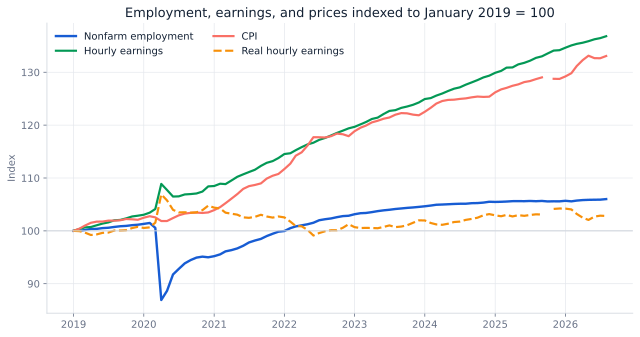
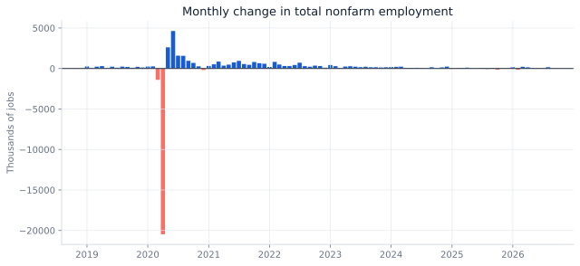

Decision brief
What do labor demand and wage purchasing power say together?
Employment growth alone can overstate workforce strength if wage gains are absorbed by inflation or hours are falling. This case uses a compact metric system rather than a single headline.
Plan workforce capacity with an employment-demand indicator and a wage-pressure indicator together. Current expansion is positive but slow: the latest 12-month nonfarm change is 603,000 jobs, or 0.38%.
Series architecture
Conformed monthly economic series
| Series | BLS ID | Role |
|---|---|---|
| Total nonfarm employment | CES0000000001 | Labor-demand level, thousands |
| Average weekly hours | CES0500000002 | Utilization / intensity |
| Average hourly earnings | CES0500000003 | Nominal wage pressure |
| CPI-U, all items | CUUR0000SA0 | Price-level deflator |
Monthly rows exclude M13 annual-average records, dates are conformed to month-start, and series-date uniqueness is asserted before joining.
Official BLS CES download directory ↗ · Official BLS CPI download directory ↗
Quality & revisions
A time series is a versioned product
The primary key is series ID + month after excluding annual-average rows.
The source file supports long-run baselines while the decision view focuses on recent regimes.
Joint metrics are calculated only where all required series are available.
Recent CES estimates can be revised; refresh date and vintage belong in the metric contract.
A forecast with low historical error can still fail after a structural break. The backtest informs method choice; it does not remove scenario planning.
Findings
Nominal wage growth and real wage growth are different stories

Total nonfarm employment fell 14.36% from February to April 2020.
The February 2020 employment level was regained in June 2022.
Latest nonfarm employment is 159.075 million, 603,000 above its year-earlier level.
The latest common-date real hourly earnings index is 102.81, modestly above January 2019.

Forecast discipline
Backtest the benchmark before adding complexity
The last 12 months are held out. A seasonal-naive benchmark (same month one year earlier) is compared with a 36-month linear trend.
| Method | Holdout MAPE | Interpretation |
|---|---|---|
| Seasonal naive | 0.23% | Lower error; preferred baseline for this window |
| 36-month linear trend | 0.93% | Higher error; overstates smooth continuation |
Use the simpler benchmark until a more complex model proves incremental accuracy across multiple rolling windows and remains explainable to planning stakeholders.
SQL pattern
Series conformance and anomaly flags
WITH monthly AS (
SELECT series_id, period_date, value,
value - LAG(value) OVER (
PARTITION BY series_id ORDER BY period_date
) AS mom_change
FROM stg_bls_series
WHERE period_code BETWEEN 'M01' AND 'M12'
)
SELECT *,
(mom_change - AVG(mom_change) OVER w) /
NULLIF(STDDEV_SAMP(mom_change) OVER w, 0) AS change_z
FROM monthly
WINDOW w AS (
PARTITION BY series_id ORDER BY period_date
ROWS BETWEEN 35 PRECEDING AND CURRENT ROW
);Operating actions
Translate signals into planning ranges
Use the backtested seasonal-naive forecast as the transparent planning anchor.
Stress hiring budgets with nominal wage and CPI paths, not a single point estimate.
Escalate when monthly employment change exceeds a rolling z-score threshold.
Limitations
Economic indicators are not company forecasts
- National aggregates can differ materially from Yuma, Arizona, industry, or occupation conditions.
- CES and CPI series have different seasonal-adjustment conventions; comparisons use indexed levels, not direct subtraction.
- Recent estimates may be revised after publication.
- Forecast error is window-dependent and should be monitored using rolling backtests.